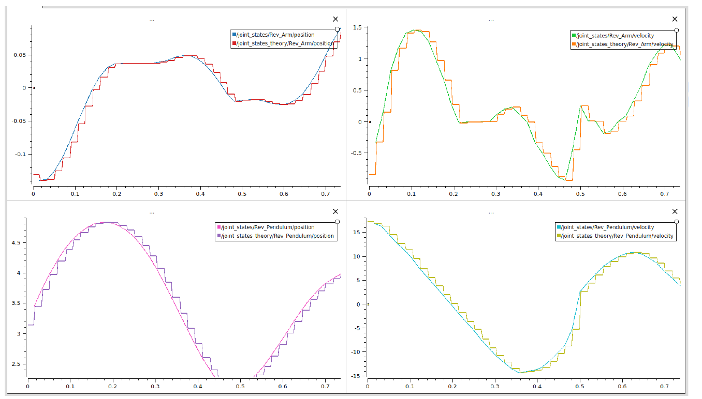
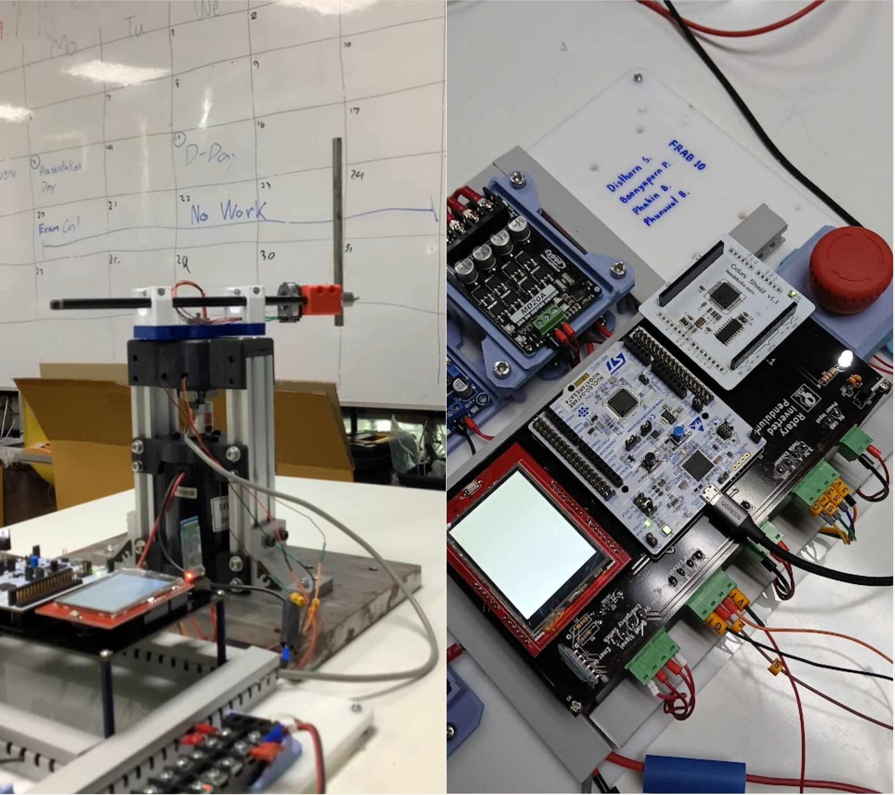
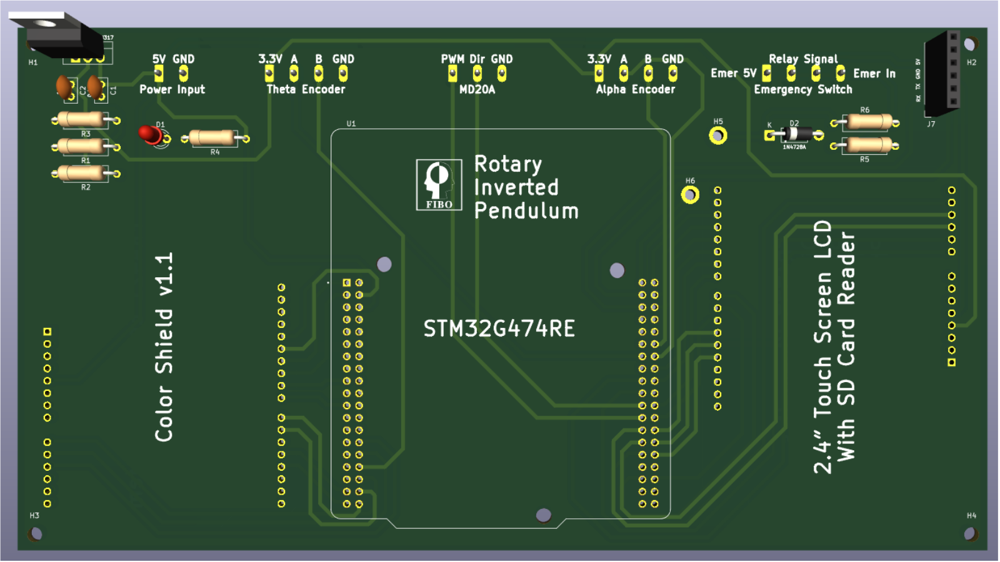
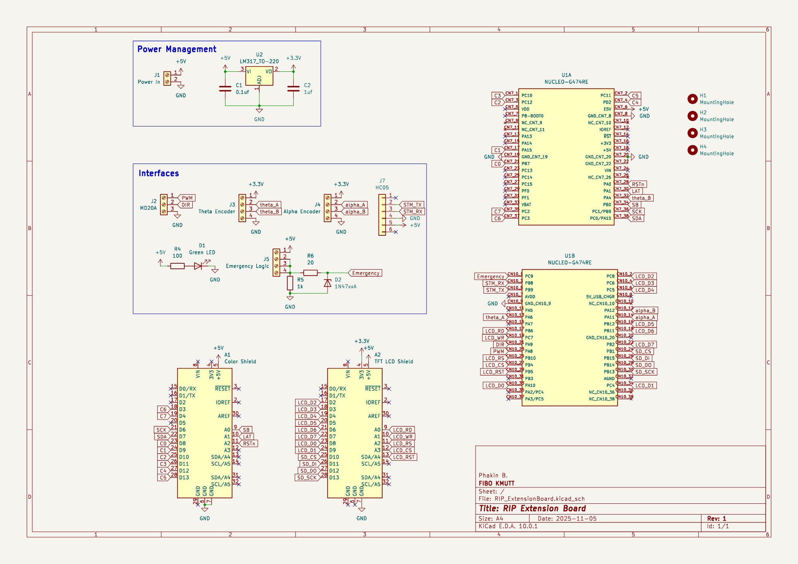
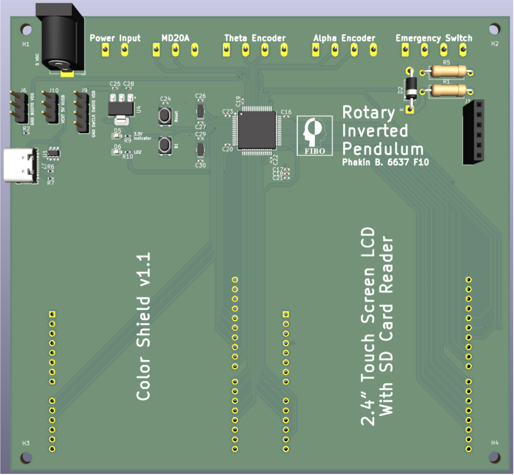
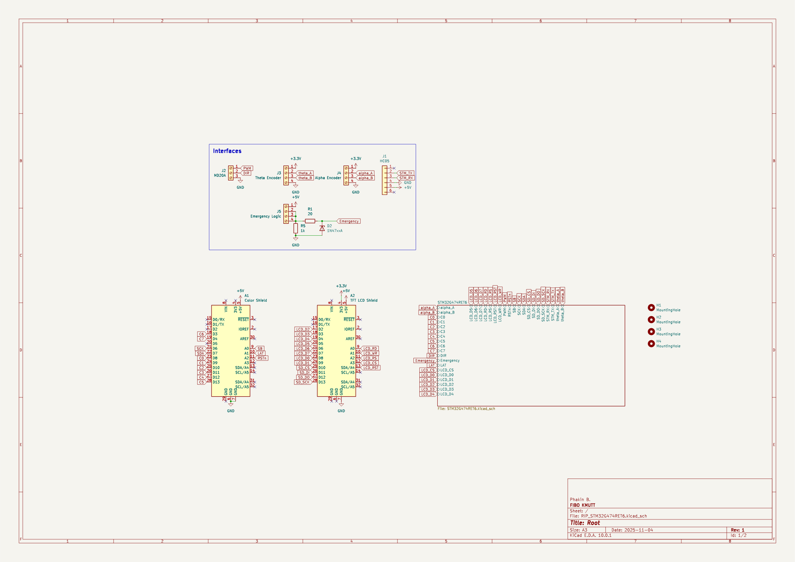
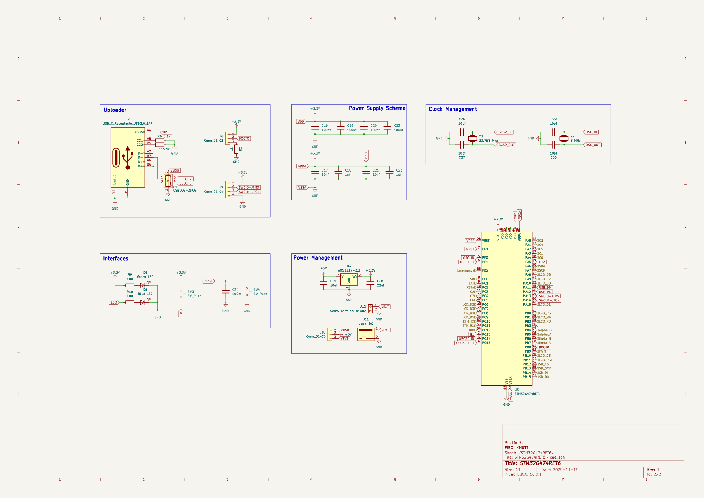

Overview
A rotary inverted pendulum that swings itself up from hanging down and then balances upright, on a custom embedded board. It is a classic control benchmark because it is nonlinear, underactuated, and unstable. One motor drives a free-swinging link, so lifting and balancing need two different controllers and a safe hand-over between them.
Linear control cannot handle the large swing-up motion. An energy-based controller first raises the pendulum's energy until it reaches the region where an LQR (linear quadratic regulator) can hold it upright. The project spans modeling, firmware and hardware. The model comes from the CAD design, the controllers run on an STM32, and micro-ROS streams live joint data to RViz for comparison with theory.
Hardware
| Microcontroller | STM32 NUCLEO-G474RE, or the STM32G474RET6 on the surface-mount board |
|---|---|
| Actuator | Brushed DC motor with a Cytron MD20A driver |
| Sensors | Two AMT103-V encoders, one on the arm and one on the pendulum |
| Interfaces | LED matrix, LCD, SD card, HC-05 Bluetooth, emergency switch |
| Dimensions | Base \(220 \times 300\) mm, arm 133 mm, pendulum 135 mm |
| Boards | Through-hole extension board (fabricated and running) and a surface-mount single board with USB-C |
System
| Control Rate | 1 kHz Timer Interrupt |
|---|---|
| State Estimation | 31-tap FIR filter with a 15 Hz cutoff on the velocities, and a Kalman filter on the motor |
| Motor Limit | LQR output limited to 10 V, supply up to 24 V |
| ROS Link | micro-ROS over UART at 115200 baud, about 55 to 57 Hz |
| Software | FreeRTOS on STM32 HAL, micro-ROS, ROS 2, RViz2, MATLAB |
Process
Derive the model
Modified DH parameters, a \(6 \times 2\) Jacobian and Lagrangian dynamics are derived in MATLAB, with mass properties from the CAD design.
Kick and swing up with energy
The arm swings the pendulum up in two stages.
- A short kick of half a second starts the motion.
- An energy law, \(U = k_E\,\Delta E\,\dot\alpha\cos\alpha\), then pumps energy into the pendulum until it nears the top.
Balance with LQR
The LQR gain comes from the discrete-time Riccati equation, with the weights chosen by Bryson's rule.
- When \(|\alpha-\pi|\lt 0.25\) rad, control switches from swing-up to LQR.
- If \(|\alpha-\pi|\gt 0.5\) rad, control returns to swing-up.
Estimate the state
A FIR filter and a Kalman filter estimate joint velocities from the two encoders.
Stream and compare
micro-ROS streams the joint states to RViz, where measured motion is compared with the motion computed from the model and the Jacobian.
Results
The pendulum swings up and balances on the real hardware. Measured and theoretical joint positions agree, and the velocity error between the model and the hardware stays below 0.01 rad/s. The stair-step look of the theory curves comes from the 55 to 57 Hz micro-ROS link, not from the model.
Table 1. Controller settings on the hardware
| Swing-Up Energy Gain \(k_E\) | 1.5 |
|---|---|
| Switch to LQR | \(|\alpha-\pi|\lt 0.25\) rad |
| Fall Back to Swing-Up | \(|\alpha-\pi|\gt 0.5\) rad |
| LQR Gain \(K\), for \(\theta,\ \alpha,\ \dot\theta,\ \dot\alpha\) | \(-0.8197,\ 11.3205,\ -0.6469,\ 1.1683\) |
| LQR Voltage Limit | 10 V |

Figures and Video





